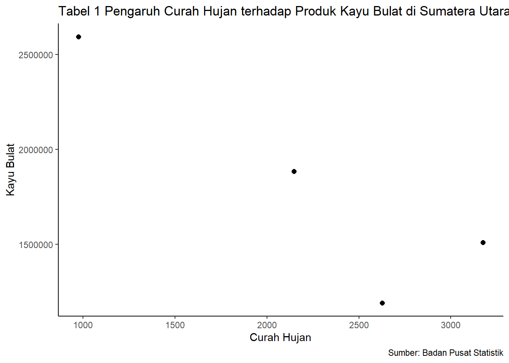

library(tidyverse)
library(readxl)
library("ggplot2")
library("dplyr")Analisis Dampak Curah Hujan terhadap Produksi Kayu Bulat di Sumatera Utara: Kajian Tahunan 2012-2015
Metode Penelitian Politeknik APP Jakarta

1 Pendahuluan
1.1 Latar belakang
Sumatera Utara merupakan wilayah di Indonesia yang memiliki potensi hutan yang besar dan karakteristik geografis yang mempengaruhi curah hujan. Sektor kehutanan merupakan salah satu komponen utama dalam ekonomi daerah dan perencanaan pengelolaan ekonomi daerah.
Curah hujan memiliki peran yang signifikan dalam ekosistem hutan dan produksi kayu bulat. Sumatera Utara memiliki potensi hutan yang besar, yang dapat digunakan untuk menghasilkan kayu bulat yang digunakan dalam berbagai aplikasi seperti konstruksi dan manufaktur. Oleh karena itu, pemahaman yang mendalam mengenai dampak curah hujan terhadap produksi kayu bulat sangat penting dalam perencanaan dan pengelolaan ekonomi daerah, terutama bagi daerah yang bergantung pada sektor kehutanan.
1.2 Ruang lingkup
Ruang lingkup penelitian ini terdapat 2 variabel antara lain, Curah hujan(mm) dan Produksi kayu bulat di provinsi Sumatera Utara. Adapun batasan waktu penelitian ini terfokus pada rentang periode 2012-2015 untuk memperoleh pemahaman yang mendalam mengenai dampak curah hujan terhadap produksi kayu bulat dalam kurun waktu tersebut.
1.3 Rumusan masalah
Berdasarkan uraian latar belakang di atas, rumusan masalah dalam penelitian ini adalah: 1. Apakah Curah Hujan berpengaruh terhadap Produksi Kayu Bulat? 2. Apakah Curah Hujan berpengaruh besar terhadap Produksi Kayu Bulat di Sumatera Utara?
1.4 Tujuan dan manfaat penelitian
Tujuan penelitian ini adalah untuk memahami bagaimana dampak curah hujan mempengaruhi ekonomidaerah dan sektor kehutanan di Sumatera Utara, dan untuk menyediakan informasi dan pengetahuan yang dapat digunakan dalam perencanaan dan pengelolaan ekonomi daerah, terutama bagi daerah yang bergantung pada sektor kehutanan.
Manfaat penelitian ini adalah memberikan wawasan yang lebih baik bagi pemerintah dan pihak terkait dalam sektor kehutanan untuk mengurangi risiko dan membantu dalam perencanaan, Penelitian ini juga diharapkan meningkatan pemahaman publik tentang peranan sektor kehutanan dan dampak curah hujan dalam menjaga kelestarian dan ekosistem hutan.
1.5 Package
2 Studi pustaka
Produksi Kayu Bulat Produksi kayu bulat adalah kegiatan ekstraksi dan pengolahan kayu dalam bentuk batang utuh dari pohon yang telah ditebang. Pada tahap awal, pohon yang memenuhi kriteria tertentu dipilih dan ditebang secara hati-hati dengan memperhatikan prinsip keberlanjutan. Batang kayu yang telah ditebang kemudian diangkut ke fasilitas pemrosesan, di mana mereka diperiksa, diukur, dan dapat dipecah menjadi bagian yang lebih kecil. Faktor-faktor yang mempengaruhi produksi kayu bulat melibatkan sejumlah variabel yang dapat memengaruhi pertumbuhan dan kualitas kayu yang dihasilkan. Kondisi iklim, seperti curah hujan, suhu, dan tingkat kelembaban, memiliki dampak signifikan terhadap pertumbuhan pohon dan produksi kayu. Selain itu, sifat tanah, topografi, dan jenis-jenis pohon yang tumbuh di suatu wilayah juga memainkan peran penting dalam menentukan produksi kayu bulat.
Curah Hujan Curah hujan merujuk pada jumlah air hujan yang jatuh ke permukaan bumi dalam jangka waktu tertentu, biasanya diukur dalam milimeter atau sentimeter. Proses ini terjadi ketika uap air di atmosfer mengalami kondensasi dan membentuk tetes-tetes air yang jatuh ke tanah. Curah hujan memiliki peran penting dalam siklus hidrologi, menyediakan air untuk tanaman, sungai, dan danau. Keberadaan dan distribusi curah hujan bervariasi di seluruh dunia, memengaruhi iklim dan ekosistem lokal serta berkontribusi pada pola cuaca yang berbeda-beda.
3 Metode penelitian
3.1 Data
Berikut adalah data yang digunakan sebagai objek penelitian, data dibawah ini merupakan data Curah Hujan dan Produksi Kayu Bulat.
| Tahun | Curah Hujan | Produksi Kayu Bulat |
|---|---|---|
| 2012 | 3175 | 1510760,89 |
| 2013 | 2627 | 1191982,58 |
| 2014 | 2148 | 1884589,7 |
| 2015 | 975,9 | 2594245,53 |
Penelitian ini menggunakan data dari Badan Pusat Statistik (BPS)
Baca Data
library("readxl")
dat<-read_excel("Tabel 2012-2015.xlsx")
head(dat)# A tibble: 4 × 2
x y
<dbl> <dbl>
1 3175 1510761.
2 2627 1191983.
3 2148 1884590.
4 976. 2594246.library("ggplot2")
library("dplyr")
ggplot(data=dat,aes(x=x,y=y))+
geom_point(color="black",size=2)+
labs(title="Tabel 1 Pengaruh Curah Hujan terhadap Produk Kayu Bulat di Sumatera Utara",
x="Curah Hujan",
y="Kayu Bulat",
caption="Sumber: Badan Pusat Statistik")+
theme_classic()
3.2 Metode analisis
Metode yang dipilih adalah regresi univariat atau Ordinary Least Square (OLS) dengan 1 variabel independen. Penelitian ini bermaksud mencari hubungan antara Curah Hujan(CH) dan Produksi Kayu Bulat(PKB). Spesifikasi yang dilakukan adalah:
\[ y_{t}=\beta_0 + \beta_1 x_t+\mu_t \] di mana \(y_t\) adalah PKB dan \(x_t\) adalah CH.
4 Pembahasan
4.1 Pembahasan masalah
Pada bagian ini dapat ditampilkan data dan visualisasi data yang telah dikumpulkan.
library("readxl")
dat<-read_excel("Tabel 2012-2015.xlsx")
head(dat)# A tibble: 4 × 2
x y
<dbl> <dbl>
1 3175 1510761.
2 2627 1191983.
3 2148 1884590.
4 976. 2594246.4.2 Analisis masalah
Hasil regresinya adalah
reg1<-lm(y~x,data=dat)
summary(reg1)
Call:
lm(formula = y ~ x, data = dat)
Residuals:
1 2 3 4
259819 -375178 41026 74332
Coefficients:
Estimate Std. Error t value Pr(>|t|)
(Intercept) 3083048.6 480527.4 6.416 0.0234 *
x -577.0 202.4 -2.851 0.1042
---
Signif. codes: 0 '***' 0.001 '**' 0.01 '*' 0.05 '.' 0.1 ' ' 1
Residual standard error: 328200 on 2 degrees of freedom
Multiple R-squared: 0.8025, Adjusted R-squared: 0.7038
F-statistic: 8.129 on 1 and 2 DF, p-value: 0.1042Koefisien regresi (x) menunjukkan adanya hubungan negatif antara variabel independen (x) dan variabel dependen (y). Meskipun nilai koefisien regresi (x) tidak signifikan pada tingkat kepercayaan 90%, namun pada tingkat kepercayaan 95% menunjukkan adanya hubungan negatif antara curah hujan (x) dan produksi kayu bulat (y).
Nilai R-squared menunjukkan sebesar 80.25%, yang mengindikasikan bahwa sebesar 80.25% variasi produksi kayu bulat (y) dapat dijelaskan oleh variabel curah hujan (x).
Uji F menunjukkan bahwa model regresi linier yang digunakan cukup baik dalam menjelaskan hubungan antara curah hujan dan produksi kayu bulat.
5 Kesimpulan
Dari kesimpulan di atas, dapat disimpulkan bahwa terdapat hubungan negatif antara curah hujan dan produksi kayu bulat di Sumatera Utara selama periode 2012-2015. Meskipun hubungan ini tidak signifikan pada tingkat kepercayaan 90%, namun pada tingkat kepercayaan 95% menunjukkan adanya hubungan yang cukup kuat antara kedua variabel tersebut. Hal ini mengindikasikan bahwa curah hujan memiliki dampak yang signifikan terhadap produksi kayu bulat di wilayah tersebut.
6 Saran
Untuk meningkatkan ketepatan penelitian ini disarankan untuk menambahkan beberapa variabel pendukung yang terkait dengan variabel utama.
7 Referensi
Gupta, K. (n.d.). Membuat kerangka penelitian. Retrieved January 10, 2024, from https://www.krisna.or.id/metopel/meeting12/#/bab-i-pendahuluan
Indonesia, B. P. S. (n.d.-a). Jumlah Curah Hujan dan Jumlah Hari Hujan di Stasiun Pengamatan BMKG, 2011-2015—Tabel Statistik. Retrieved January 10, 2024, from https://www.bps.go.id/id/statistics-table/1/MTk1OSMx/jumlah-curah-hujan-dan-jumlah-hari-hujan-di-stasiun-pengamatan-bmkg-2011-2015.html
Indonesia, B. P. S. (n.d.-b). Produksi Kayu Bulat Menurut Provinsi—Tabel Statistik. Retrieved January 10, 2024, from https://www.bps.go.id/id/statistics-table/2/MjE2NSMy/produksi-kayu-bulat-menurut-provinsi–m3-.html
Menggunakan Quarto & Github. (n.d.). Retrieved January 10, 2024, from https://www.krisna.or.id/metopel/meeting11/#/title-slide
Produksi Kayu Bulat dan Kayu Olahan | Satu Data NTB. (n.d.). Retrieved January 10, 2024, from https://data.ntbprov.go.id/dataset/produksi-kayu-bulat-dan-kayu-olahan